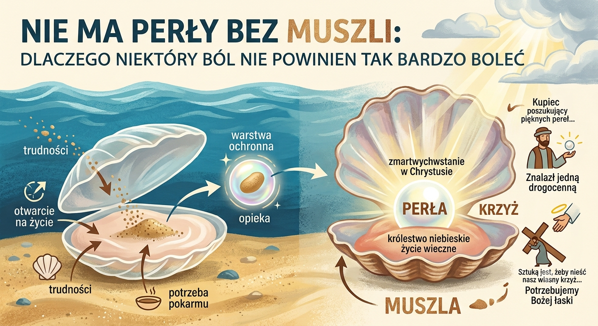

26 Lipca 2026

"Dalej, podobne jest królestwo niebieskie do kupca, poszukującego pięknych pereł. Gdy znalazł jedną drogocenną perłę, poszedł, sprzedał wszystko, co miał, i kupił ją"
Podczas kazania usłyszałem pewną ciekawą myśl, dlaczego Jezus w przypowieści mówi akurat o perle. Myślałem, że chodziło tylko o to, że perła jest czymś drogocennym. Ksiądz jednak wspomniał, że proces tworzenia się perły ma pewne analogie do zmartwychwstania (w Chrystusie Jezusie).
Otóż perły są tworzone przez muszle, które leżą na dnie morza. Ich wnętrze jest bardzo delikatne. Jednak żeby móc wziąć pokarm do siebie – który pływa blisko dna morza – to muszla musi się na chwilę otworzyć. Podczas tego procesu nie tylko pokarm ląduje w delikatnym wnętrzu muszli, ale też ziarnka piasku (ciała obce), które bardzo ranią muszlę, przez co muszla tworzy warstwę ochronną wokół dookoła nich. Jeśli się ten proces wystarczająco często powtarza, to stworzy się perła.
Dla mnie ten obraz z kazania jest bardzo ciekawy i myślę, że możemy z tego dużo wniosków wyciągnąć dla naszego własnego życia. Przede wszystkim, będą rzeczy w naszym życiu, które będą dla nas trudne, będą nas bolały. To są te ziarnka piasku, które muszla przez przypadek połyka. To jest nasz krzyż. Warto się zaopiekować tymi trudnymi rzeczami, tymi ranami, bo z tego wtedy może wyjść coś naprawdę pięknego, jak ta perła, która symbolizuje życie wieczne. Ale musimy się odpowiednio tym zaopiekować, bo jak tych obcych ciał — które nas ranią — nie zidentyfikujemy i otoczymy ich naszą opieką (ochronną warstwą), to będzie nam to stale urągać i tylko zatruwać nasze życie.
Ja jestem też ostatnią osobą, która dobrowolnie by szukała bólu. Ale czy możemy tego jakoś uniknąć? Myślę, że gdyby muszla potrafiła nie połykać piasek, to by to chyba robiła. Jednak jest to coś, co nie od muszli zależy, tylko od zewnętrznych czynników. Nie jestem żadną muszlą, ale w moim mniemaniu muszla może tego bólu tylko uniknąć, jeśli nie będzie się otwierać do konsumpcji pokarmu. A bez pokarmu niechybnie czekałaby ją śmierć. Więc niewybieranie życia, które przez zewnętrzne czynniki niesie ze sobą nieunikniony ból, jest równoznaczne z wybieraniem śmierci.
Chcę tutaj też podkreślić, że nadmierny ból też nie jest dobry. Muszla mogłaby z własnej woli czekać, aż jak największa ilość piasku wpadnie do jej wnętrza. Jednak natura walczy, żeby przetrwać, to dlaczego miałaby szukać dodatkowego bezsensownego bólu? Nie jesteśmy w stanie przejść przez życie bez bólu, aczkolwiek nie powinniśmy sobie sami dodatkowy ból dokładać, bo jaka w tym korzyść?
Sztuką jest, żeby nieść nasz własny krzyż przez nasze życie. Lecz samemu z tym nie damy sobie rady i potrzebujemy do tego Bożej pomocy, Bożej łaski.